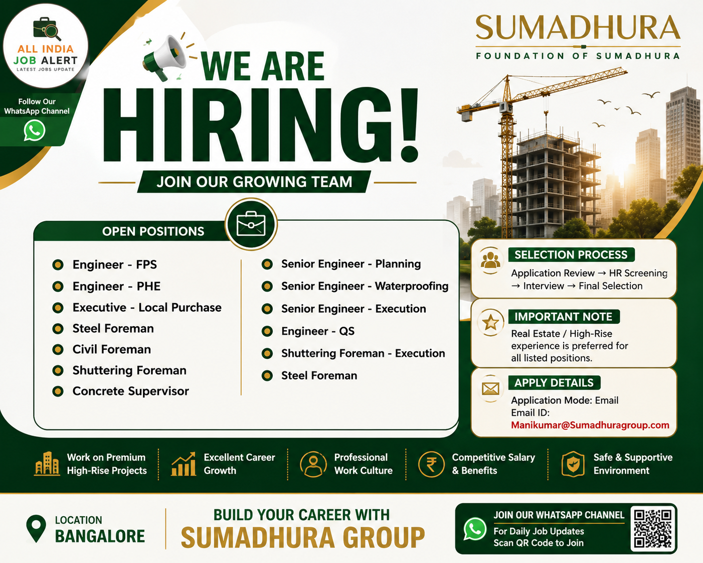

Sumadhura Group has announced its latest Recruitment Drive 2026 for multiple engineering and construction positions. The company is inviting applications from experienced professionals for Civil, Planning, QS, Waterproofing, Purchase and Execution departments. Candidates with Real Estate and High-Rise building experience will be given preference.
This recruitment is an excellent opportunity for candidates looking to build a long-term career with one of India's leading real estate developers. The company offers a professional work environment, attractive salary packages, career growth opportunities and exposure to premium residential and commercial projects.
| S.No | Position |
|---|---|
| 1 | Engineer – FPS |
| 2 | Engineer – PHE |
| 3 | Executive – Local Purchase |
| 4 | Steel Foreman |
| 5 | Civil Foreman |
| 6 | Shuttering Foreman |
| 7 | Concrete Supervisor |
| 8 | Senior Engineer – Planning |
| 9 | Senior Engineer – Waterproofing |
| 10 | Senior Engineer – Execution |
| 11 | Engineer – QS |
| 12 | Shuttering Foreman – Execution |
| 13 | Steel Foreman |
Sumadhura Group is one of India's leading real estate developers, known for delivering premium residential and commercial projects with exceptional quality and timely completion. The company has built a strong reputation in the construction industry through innovation, engineering excellence and customer satisfaction. Its projects feature modern architecture, world-class amenities and sustainable construction practices.
Working with Sumadhura provides professionals with an opportunity to contribute to iconic high-rise developments while enhancing their technical knowledge and leadership skills. Employees receive exposure to advanced construction methods, experienced project teams and a professional working environment that encourages long-term career growth.
Selected candidates will be responsible for planning, execution, supervision, quality control and project coordination activities according to their respective departments. Planning Engineers will prepare project schedules and monitor work progress. Execution Engineers will ensure timely completion of construction activities while maintaining quality standards. Waterproofing Engineers will supervise waterproofing systems and inspections.
QS Engineers will prepare BOQs, quantity calculations and billing documents. Purchase Executives will coordinate procurement of construction materials. Foremen and Supervisors will manage site manpower, daily work execution, productivity and safety compliance. All employees are expected to work closely with project managers, consultants and clients to ensure successful project delivery.
Selected candidates will receive an attractive salary package based on qualifications, skills and previous experience. Employees may also receive performance-based incentives, career growth opportunities, exposure to premium construction projects, professional training, paid leave, insurance benefits and a supportive work environment.
Interested and eligible candidates can apply by sending their updated Resume/CV to the official recruitment email mentioned below. Make sure your resume contains your latest qualification, work experience, current location, contact number and technical skills. Mention the position name in the subject line of your email for faster processing.
Application Mode: Email
Official Email:
Manikumar@Sumadhuragroup.com
Real Estate / High-Rise construction experience is preferred for all listed positions. Only shortlisted candidates will be contacted by the recruitment team. Ensure that all information provided in your resume is accurate before applying.
1. Which company is hiring?
Sumadhura Group.
2. Where is the job location?
Bangalore.
3. Is High-Rise experience required?
Yes, it is preferred for all positions.
4. What is the application mode?
Email application.
5. What is the official email ID?
Manikumar@Sumadhuragroup.com
6. Is this a full-time job?
Yes.
7. Which departments are hiring?
Civil, Planning, QS, Execution, Waterproofing, Purchase and Site Operations.
8. What documents are required?
Updated Resume, Educational Certificates, Experience Certificates and ID Proof.
9. Who can apply?
Eligible candidates with relevant qualifications and experience.
10. Does Sumadhura provide career growth?
Yes, employees get opportunities to work on premium real estate projects with long-term career development.
Join our WhatsApp Channel to receive daily Private Jobs, Government Jobs, Walk-in Interviews and Engineering Recruitment Updates across India.
Join WhatsApp Channel